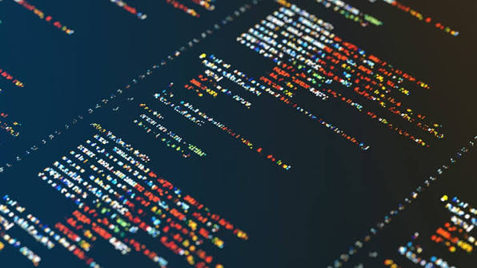
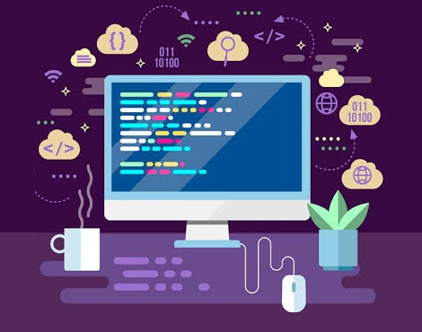
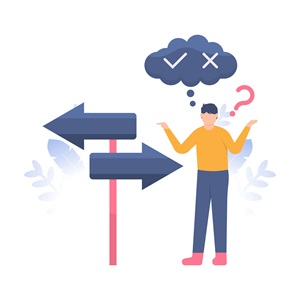

Sabemos que a tecnologia e a programação andam juntas.
A tecnologia em seu amplo campo engloba ferramentas, sistemas,
infraestrutura, redes e inovações.
A programação é a ferramenta usada para criar instruções que
dão vidas a softwares dentro desse ecossistema tecnológico.
Espero que esse guia tenha te motivado a buscar mais sobre esse mundo
e saber que a tecnologia é algo presente no nosso cotidiano. E além de tudo indispensável.

Decisão (if / else)
Imagine um semáforo:se
estiver verde, atravessa;
se caso for
vermelho, você espera.
O programatoma decisões
dependendo de uma
condição.
Repetição (Loop)
Imagine que você precisa
varrer a sala.
Enquanto tiver sujeira
continua varrendo.
Se caso nao houver mais,
para. O loop repete uma
ação enquanto determinada
condição for verdadeira.
Variável
Imagine uma caixa com etiqueta
Você pode ter uma caixa
chamada 'idade' e guardar
o número 21 dentro dela.
Se a idade mudar, você troca
o conteúdo da caixa.